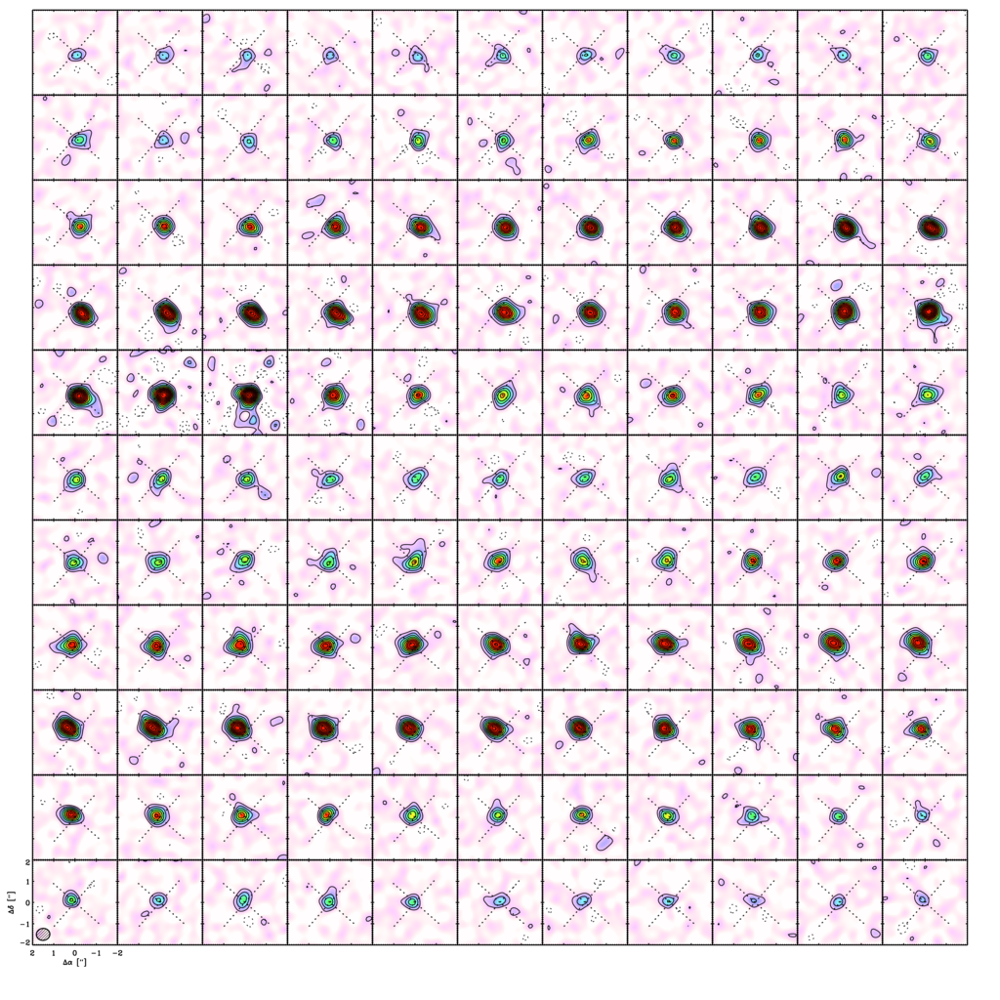
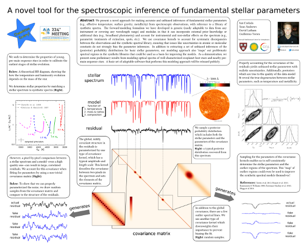
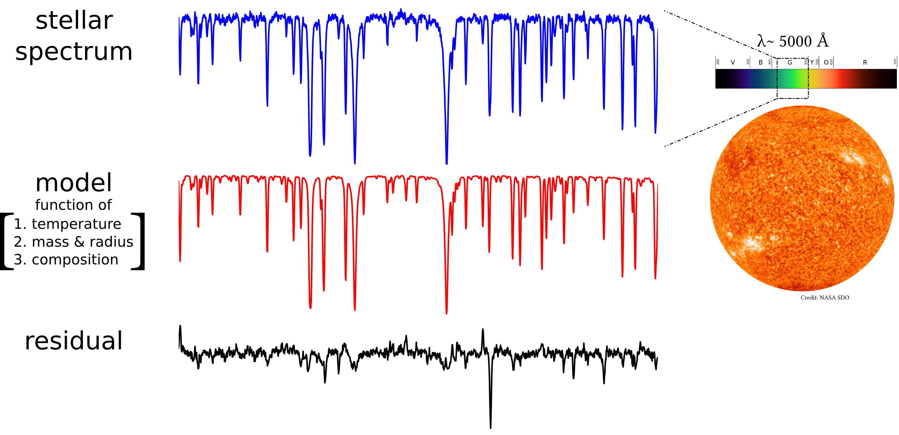
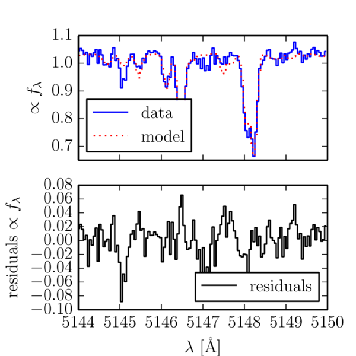
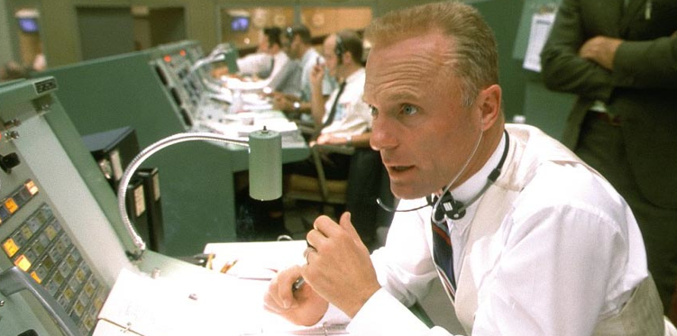
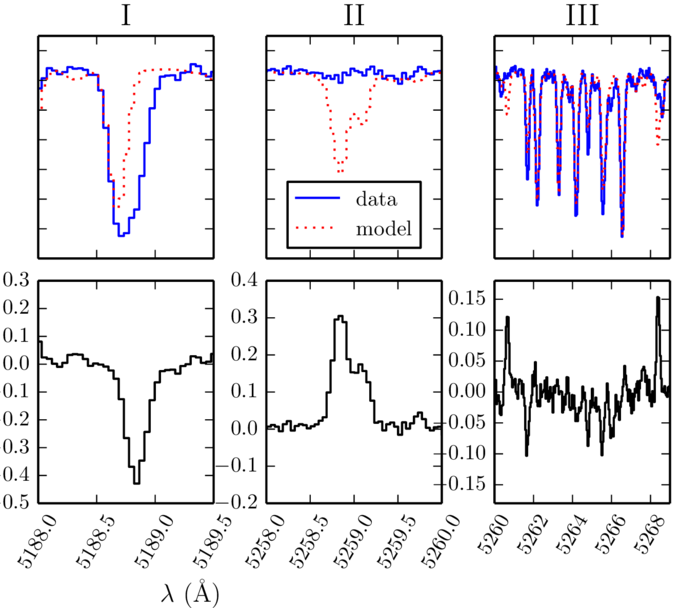
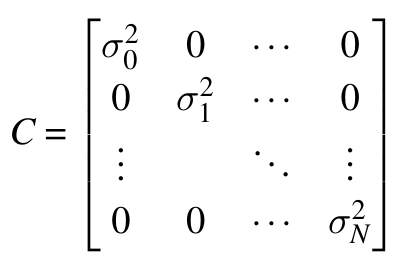
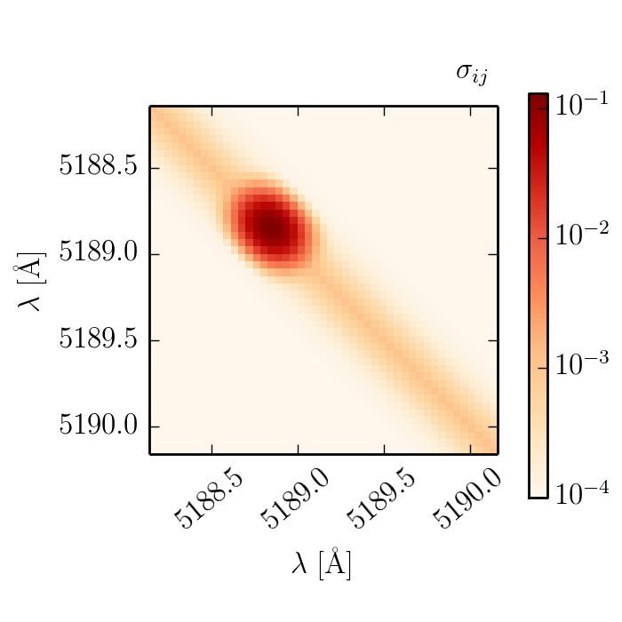
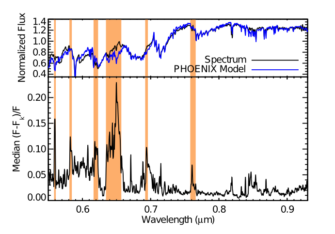

TAC Meeting #2
Friday June 13th, 2014
Ian Czekala
iczekala@cfa.harvard.edu
Introduction
My thesis: Fundamental Properties of Young Stars.
We use sub-millimeter and optical observations of young stellar systems and protoplanetary disks to learn about the earliest stages of stellar evolution.
This talk is an update on my progress since our meeting last November. Specifically, about my progress towards the papers we discussed.
Measure the mass (SMA/ALMA) and fundamental properties (optical) of young stars to calibrate pre-main sequence evolution.
Status updates
- data collection (radio + optical)
- proposals (optical)
- conferences and papers
ALMA and SMA
- sub-mm channel maps used to derived dynamical masses by modelling the Keplerian rotation of the gas
- ALMA Cycle I: 1/4 targets delivered
- SMA data complete in the archive
- queue observing at SMA in February

Fall 2013 Optical

FLWO TRES and Keplercam, high resolution spectroscopy and photometry.
10 northern transition disk sources and template stars, all targets at least 2 epochs, many for 3.

Spring 2014 Optical
10 southern transition disk sources with MIKE on Magellan 6.5m.
SMA data for these sources already in the archive.

Resubmit for Spring 2015
- 50 hours of travel
- 72 hours at Las Campanas
- 75 minutes of data
- ~5 usable targets in 3-4" seeing.
MIKE proposal will be resubmitted October 2014.


New optical proposal Fall 2014

Combined TRES/Keplercam proposal to study veiling systematics in LkCa 14/15. Submitted to OIR June 10th
Leverages the code infrastructure already developed.
If approved by the TAC, this would lead to a new paper.
Optical proposal

- Observe LkCa 14 and LkCa 15 at 50 epochs
- Infer stellar parameters
- Track systematics
- Estimate accretion variability in a transition disk host
- Track spots, model
Results
Conference and paper status
We have developed a novel technique to fit stellar spectra using synthetic models.
It self-consistently derives unbiased posteriors on the stellar parameters.
- Kepler ExoStat conference talk (June 18th)
- ApJ submission mid-summer

The problem in a nutshell

Spectroscopic fits are different from normal $ \chi^2$ fits
Spectral lines are the fundamental "data points"


Fitting spectra $\ne$ vanilla $\chi^2$
- The fundamental "data point" of a spectrum is a spectral line
- When the strength of a line is incorrect, it causes several correlated pixel residuals
- You are saved only if your model is perfect
- With any large swath of spectrum,
or at least very difficult to attain in practicefailureperfection is not an option

Worse still: outliers

If one wants to "fit" spectra via some likelihood function, $p(\theta | D)$, it should account for the covariant structure of the residuals. Assumption of independent, Gaussian uncertainties yields $\chi^2$ $$ p(\theta | D) \propto \prod_i^N \frac{1}{\sqrt{2 \pi} \sigma_i} \exp \left ( - \frac{R_i^2}{2 \sigma^2} \right ) $$
$$ \ln [p(\theta | D) ] \propto -\frac{1}{2} \chi^2 = - \frac{1}{2} \sum_i^N \frac{R_i^2}{\sigma_i^2} $$
Vanilla $\chi^2$, no correlations between data points
Allowing correlations between residuals
$$p(\theta | D) = \frac{1}{\sqrt{(2 \pi)^N \det(C)}} \exp\left ( -\frac{1}{2} \textbf{r}^T C^{-1} \textbf{r} \right ) $$
$$ \ln[p(\theta | D)] = -\frac{1}{2} \textbf{r}^T C^{-1} \textbf{r} - \frac{1}{2} \ln \det C - \frac{N}{2} \ln 2 \pi $$
The covariance matrix accounts for the correlated structure of the residuals we saw earlier.
White noise

$\sim 5$ pixels correlated

Globally covariant structure
Downweight outlier lines


Posteriors
Extensive tests w/ WASP-14 check out. Preserves degeneracies. Inflates to capture uncertainty in model naturally. Late type stars.
Hyperparameters
Posteriors on hyperparameters.
Cycle of improvement
- Fit many stellar spectra
- Learn the covariance structure, including bad regions
- Use the covariances to regress out what the model should be
These improvements to the models could be used to inform the modellers what might need improvement.
If you're impatient/a DIY-er, you can also correct the models yourself by "inferring" the correct synthetic spectrum in this region.
Conclusions
- Covariance kernels are useful for modelling stellar spectra
- Specific kernels can be used to account for bad lines
- Learnt covariance structure can be used to improve the stellar models For an interactive example of a fit to real data, click here.
- Now that stellar parameters are covered (too strong), expanding framework to deal with veiling
- I'm going to work my ass off.